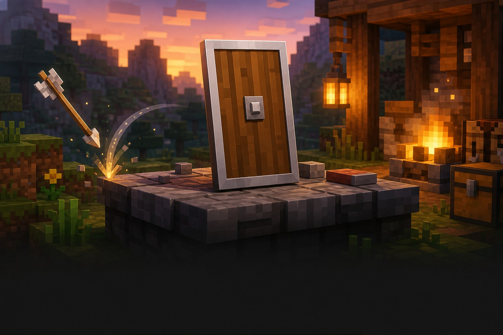

Корисне відкриття
Зроби речі крутішими
Щит — це кнопка «не чіпайте мене».
Тримай щит у другій руці й затискай використання, коли летить стріла або біжить скелет.

Навіщо він потрібен?
Щит дає тобі час зупинитися й не панікувати. Він блокує багато атак спереду, поки ти думаєш, куди тікати або як відповісти.
Три прості дії
Як користуватися щитом
1Поклади в другу рукуКомірка поруч із персонажем в інвентарі+
Відкрий інвентар і перенеси щит у комірку другої руки. Тепер меч або інструмент лишається в основній руці.
2Дивись на небезпекуЩит працює перед тобою+
Повернися обличчям до скелета, зомбі або вибуху. Щит не прикриває спину.
3Затисни використанняПрава кнопка миші за замовчуванням+
Утримуй клавішу використання, коли атака летить у тебе. У Java щит починає блокувати майже одразу.
Під час блокування ти рухаєшся повільніше.
Захист: як це виглядає
летить
відбиває
● Успішний блок зупиняє шкоду від багатьох атак.
Підказка мандрівникові
Важливо знати
Спина не захищена
Повернись до атаки обличчям, інакше щит не допоможе.
Сокира може завадити
У Java удар сокирою може тимчасово вимкнути щит.
Щит зношується
Сильні заблоковані удари витрачають його міцність.
Маленьке завдання
Спробуй за 5 хвилин
- Зроби щит і поклади його в другу руку.
- Знайди скелета на безпечній відстані.
- Відбий його стрілу щитом.
★ Бонус: прикрась щит візерунком із прапора.